Thème 2 · Martinique — 4e · Atelier : adresse IP fixe, dépannage et simulation d'un réseau local (Cisco Packet Tracer 8.2)
Tu viens de donner une adresse à chaque machine du jardin connecté et de tracer le chemin d'une mesure jusqu'à l'écran. Et l'an dernier déjà, tu avais mis les lampadaires en réseau.
Cette année, ce qui change : on ne construit plus le réseau : on le dépanne. La serre est muette, les câbles sont pourtant branchés — et c'est là qu'on découvre qu'un réseau peut être physiquement connecté et logiquement cassé.
Tu prends la séquence en route ? Une adresse IP est le numéro d'une machine sur un réseau ; deux machines qui ne partagent pas le même réseau ne se parlent pas, même reliées par un fil.
Quatre gestes à faire une fois, au début, et ta séance ne se perdra pas. Tu les as peut-être déjà faits une autre année : refais-les, c'est court. Et si tu ne les as jamais faits, tout est écrit ici — tu n'as besoin de rien d'autre.
NIVEAU-SUJET-TON NOM.pkt..pkt est ton rendu. Ajoutes-y une capture d'écran de la topologie si le compte rendu la demande.Jeudi, 7 h 30, dans la serre du jardin connecté du collège, à Sainte-Luce. Le club jardin vient d'installer un capteur d'ambiance flambant neuf (température + humidité) qui doit envoyer ses mesures au serveur de la serre. Sur le papier, tout est branché. En vrai : aucune mesure n'arrive, et l'imprimante qui sort les étiquettes des semis est muette elle aussi. M.
Firmin, le gestionnaire du réseau, dépose une boîte sur la table : « Là-dedans, il y a le plan de la serre. Je veux une équipe qui me PRÉPARE l'arrivée de ce capteur dans les règles de l'art : un plan d'adressage, une adresse fixe correctement paramétrée — passerelle comprise — et surtout des dépanneurs capables de trouver une panne SANS tout débrancher au hasard. Vous vous entraînez dans le simulateur, et vous me prouvez chaque réparation. »
Ta mission d'expert : concevoir le plan d'adressage de la serre, reconstruire son réseau dans Cisco Packet Tracer, donner au capteur son adresse IP fixe, puis jouer les médecins du réseau : deux pannes t'attendent à la clinique, et la simulation devra valider chacun de tes diagnostics.
Comment ajouter un objet connecté à un réseau local — et comment retrouver, avec méthode, la panne qui l'empêche de communiquer ?
Chaque code est écrit ici en entier, avec ce que l'élève FAIT réellement pour le travailler. Les activités rappellent leur compétence sous leur titre.
4e_C4.7 — « Paramétrer une adresse IP fixe pour ajouter un objet connecté à un réseau local. » → concevoir SON plan d'adressage (act. 1) puis paramétrer réellement l'adresse fixe du capteur, passerelle comprise, et le prouver au ping (act. 3).
4e_C4.8 — « Résoudre des problèmes pour assurer la communication entre les différents terminaux dans un réseau informatique (simulation ou réseau local déconnecté du réseau pédagogique). » → construire le réseau d'entraînement (act. 2) puis diagnostiquer et réparer la panne « mauvaise rue » avec la démarche du dépanneur (act. 4).
4e_C4.9 — « Compléter une simulation fournie pour valider le comportement d'un réseau informatique. » → ouvrir le fichier de simulation fourni, y ajouter le test qui manque (l'enveloppe du mode Simulation) et valider la réparation de la panne « liaison coupée » (act. 5).
D2 — Les méthodes et outils pour apprendre : composante « coopération et réalisation de projets » (binômes pilote/copilote à rôles tournants, revue de plan croisée en act. 1) et composante « outils numériques pour échanger et communiquer » (le simulateur, le fichier .pkt nommé et rangé, les relevés de preuve).
D4 — Les systèmes naturels et les systèmes techniques : composante « conception, création, réalisation » (concevoir SON plan d'adressage puis le réaliser en simulation) et composante « démarches scientifiques » (démarche de diagnostic symptôme → hypothèse → test → remède, preuve par le ping et par la simulation).
CRCN explicitement reliés par le programme à la circulation de l'information dans un réseau : 2.3 — Collaborer (binômes pilote/copilote à rôles tournants, revue croisée du plan) et 5.2 — Évoluer dans un environnement numérique (manipulation du simulateur, fichiers nommés et rangés).
CRCN complémentaire particulièrement travaillé dans cet atelier : 5.1 — Résoudre des problèmes techniques, niveau 2 consolidé, niveau 3 visé — repère officiel : « Identifier des problèmes techniques liés à un environnement informatique. » Au niveau 3, l'élève n'applique plus une procédure donnée : il élabore sa démarche de diagnostic (act. 4-5, cartouche complet dans l'activité 4).
D1 — Les langages pour penser et communiquer est réellement mobilisé (langages scientifiques et informatiques : adresses IPv4, masque, schéma réseau, lecture du ping ; langue française : le diagnostic argumenté de l'activité 4). Il n'est affiché comme évalué que si l'enseignant utilise la production écrite comme trace d'évaluation — mieux vaut trois liens Socle authentiques que cinq domaines décoratifs.
Deux possibilités avec le professeur : ① observer l'étiquette d'un objet connecté réel du collège et y repérer son adresse IP (regarder seulement : on ne touche JAMAIS au réseau pédagogique) ; ② le TP réel de 15 min sur un réseau totalement isolé — 2 PC + 1 petit commutateur dédié, JAMAIS reliés au réseau du collège : adresser PC A en 192.168.50.10 et PC B en 192.168.50.20 (masque 255.255.255.0), prouver au ping, puis le professeur provoque une panne (PC B en 192.168.51.20) que l'équipe doit retrouver. C'est exactement le « réseau local déconnecté du réseau pédagogique » du programme.
Construire le réseau de la serre dans Cisco Packet Tracer 8.2, paramétrer l'adresse fixe, provoquer et réparer les deux pannes, valider par la simulation. Toutes les captures de cette page viennent du vrai logiciel, valeurs mesurées comprises.
Concevoir le plan d'adressage sur papier (act. 1), lire les schémas de la page (identiques à l'écran du logiciel) et jouer les deux pannes dans la clinique du réseau, le mini-simulateur intégré à l'activité 4.
Cette séquence s'appuie sur ce que tu as appris en 5e. Avant de partir, vérifie tes bagages : 5 questions, aucune note — juste un aiguillage. 4 ou 5 bonnes réponses : embarquement direct pour l'activité 1. 3 ou moins : ouvre d'abord la capsule « Je révise la 5e en 4 minutes » juste en dessous.
Le réseau local en 4 idées : ① les terminaux (PC, serveur, imprimante, capteur…) sont les habitants : ils envoient et reçoivent des messages. ② Le commutateur est le carrefour : tous les câbles arrivent à lui, et il distribue chaque message à son destinataire — cette organisation en soleil s'appelle la topologie en étoile. ③ Chaque habitant a une adresse IP unique : deux fois la même adresse, et le facteur ne sait plus qui livrer. ④ Une adresse se lit « rue + maison » : dans 192.168.20.10, le début commun (192.168.20) est la rue du quartier, le dernier nombre (10) est le numéro de la maison.
Referme la capsule et refais le passeport : il devrait passer au vert.
ℹ Le passeport ne compte pas dans la progression des 5 activités — c'est ton échauffement.
👥 Qui fait quoi — et quand on échange
Deux rôles seulement, et on échange à la moitié du temps. Un rôle est un tour, pas une étiquette.
| Rôle | 1re moitié | 2e moitié |
|---|---|---|
| Pilote | ||
| Vérificateur |
À recopier à chaque séance. Si personne ne change de rôle, c'est toujours le même qui apprend à tenir le clavier — et ce n'est pas celui qui en avait le plus besoin.
La règle du jeu (règle d'or de l'atelier) : tu conçois d'abord, tu compares ensuite. Le plan de référence n'apparaît qu'à l'étape de lecture — c'est TA proposition qui compte, même différente de la nôtre, tant qu'elle respecte les lois du réseau.
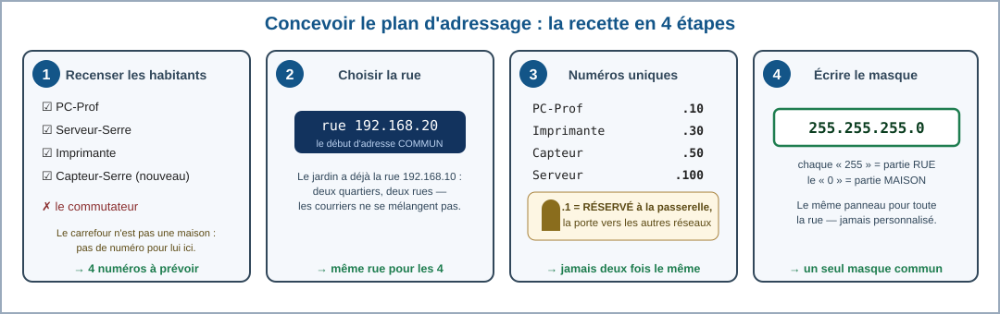
Fais la liste de TOUT ce qui devra parler sur le réseau de la serre : le PC du professeur, le serveur qui stocke les mesures, l'imprimante à étiquettes, et le nouveau capteur d'ambiance. Piège classique : le commutateur relie tout le monde, mais dans notre plan simple il ne réclame pas de numéro — c'est le carrefour, pas une maison.
Tous les habitants d'un même réseau local partagent le début de leur adresse : c'est la « rue ». Pour la serre, M. Firmin impose la rue 192.168.20 (le jardin utilise déjà la rue 192.168.10 — deux quartiers différents, pour ne pas mélanger les courriers).
Chaque habitant reçoit un dernier nombre unique — tu l'as appris en 5e : un doublon casse la livraison. Nouveauté de 4e : on réserve le .1. Ce numéro n'est donné à personne : c'est celui de la passerelle (gateway), la future porte de sortie du quartier vers les autres réseaux. Même si la serre vit pour l'instant repliée sur elle-même, un bon urbaniste prépare la sortie. À savoir : le .1 n'est pas une loi d'Internet — c'est le choix du gestionnaire, une convention très courante : « dans le réseau de notre serre, M. Firmin a choisi .1 pour la passerelle ». Un autre gestionnaire aurait pu choisir .254.
Le masque de sous-réseau est le panneau qui explique où finit la rue et où commence le numéro : 255.255.255.0 signifie « les trois premiers nombres sont la rue, le dernier est la maison ». En 5e, cette case « se remplissait toute seule » ; cette année, tu sais la lire. Précision de scientifique : c'est dans notre réseau, qui utilise le masque 255.255.255.0, que les trois premiers nombres forment la rue — d'autres réseaux utilisent d'autres masques qui découpent l'adresse ailleurs. Le masque fait vraiment partie de l'adresse : change-le, et la frontière de la rue se déplace.
👥 Revue croisée : échange ton plan avec le binôme voisin — vérifiez l'un chez l'autre : rue correcte ? aucun doublon ? .1 intact ?
Ton plan est peut-être différent : c'est NORMAL et c'est bien. Voici celui que M. Firmin a retenu — c'est lui que nous utiliserons dans le logiciel, pour que toute la classe parle du même réseau.
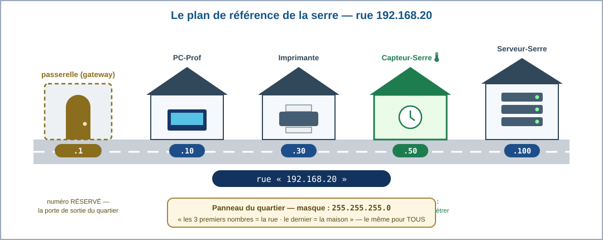
Du dessin au langage informatique : voici exactement le même plan, écrit comme le note un technicien. Sur ta feuille (ou de tête), surligne la partie « rue » et la partie « maison » de chaque adresse : 192.168.20 | 50.
| Appareil | Adresse IP | Masque | Passerelle |
|---|---|---|---|
| PC-Prof | 192.168.20.10 | 255.255.255.0 | 192.168.20.1 |
| Imprimante | 192.168.20.30 | 255.255.255.0 | 192.168.20.1 |
| Capteur-Serre | 192.168.20.50 | 255.255.255.0 | 192.168.20.1 |
| Serveur-Serre | 192.168.20.100 | 255.255.255.0 | 192.168.20.1 |
Remarque d'urbaniste : la passerelle 192.168.20.1 est prévue au plan mais non installée dans notre montage d'entraînement — la porte est réservée, la maison n'est pas encore construite. Elle prendra corps en 3e, avec le routeur.
Relis chaque vignette de la recette : étape 1 = QUI numéroter ; étape 2 = la partie COMMUNE de l'adresse ; étape 3 = le numéro UNIQUE + le .1 réservé ; étape 4 = le panneau 255.255.255.0. Dans le plan de référence, suis la rue de gauche à droite : passerelle .1 (réservée), PC-Prof .10, Imprimante .30, Capteur .50, Serveur .100.
Adresse = rue + maison. Dans 192.168.20.50 : rue = 192.168.20 (trois nombres), maison = 50. Le masque 255.255.255.0 dit exactement cela : trois « 255 » pour la rue, un « 0 » pour la maison. La passerelle est une PORTE, pas un habitant : personne ne s'assoit dans une porte, donc personne ne prend le .1. Et deux rues différentes (…10 / …20) = deux réseaux différents, même si tout le reste se ressemble.
Étape 1 : 4 habitants à numéroter (PC-Prof, Serveur-Serre, Imprimante, Capteur-Serre). Le commutateur est le carrefour : dans notre plan simple, il n'a pas besoin d'adresse pour faire son travail de facteur.
Étape 2 : la rue = 192.168.20, les trois premiers nombres, identiques pour tous. C'est ce préfixe commun qui fait dire aux appareils « nous sommes du même quartier ».
Étape 3 : le .1 est réservé à la passerelle — la porte de sortie vers les autres réseaux. C'est une convention très répandue chez les techniciens : chez toi aussi, ta box est très probablement en .1 !
Étape 4 : le masque 255.255.255.0 découpe l'adresse : 255 = « partie rue », 0 = « partie maison ».
Lecture du plan : capteur = 192.168.20.50 ; le .100 du serveur est valable car unique et dans la rue ; jamais deux fois le même numéro ; serre et jardin = deux réseaux VOISINS (rues différentes) — on les fera se parler en 3e, justement grâce aux passerelles ; le masque est le même pour toute la rue.
Tu as construit ton premier réseau en 5e — cette année, la recette est plus courte car tu connais déjà les gestes. Binômes pilote/copilote : le pilote manipule, le copilote lit la recette à voix haute et vérifie chaque étape ; on échange les rôles à l'étape D. Et pour que CHACUN manipule vraiment, le contrat du binôme est écrit d'avance :
| Élève A | Élève B |
|---|---|
| pose le commutateur + câble PC et serveur (act. 2) | pose les terminaux + câble imprimante et capteur (act. 2) |
| configure PC-Prof et le capteur (act. 3) | configure l'imprimante et le serveur (act. 3) |
| lance le ping vers le capteur et l'explique à voix haute | lance les pings de validation et les explique à voix haute |
| séance suivante : on INVERSE tout. | |
🪜 Différenciation : ton professeur peut te donner le fichier 4e_serre_DEPART.pkt — le montage déjà câblé et nommé, mais SANS aucune adresse. Tu commences alors directement à l'activité 3 : la compétence évaluée n'est pas de retrouver le 2960 dans la palette !
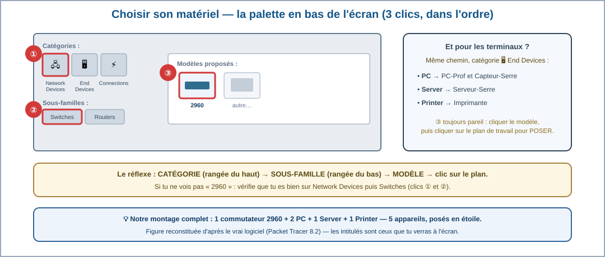
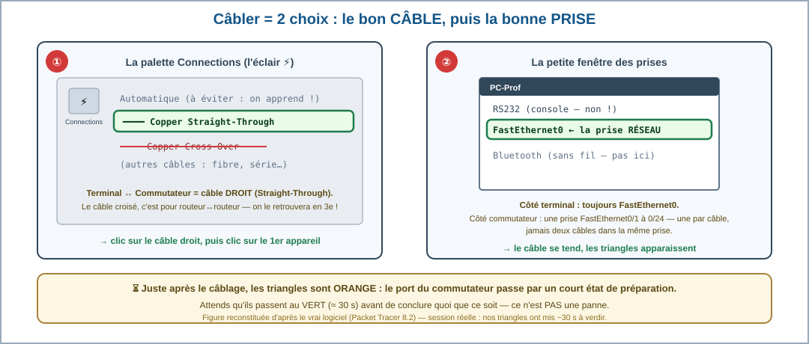
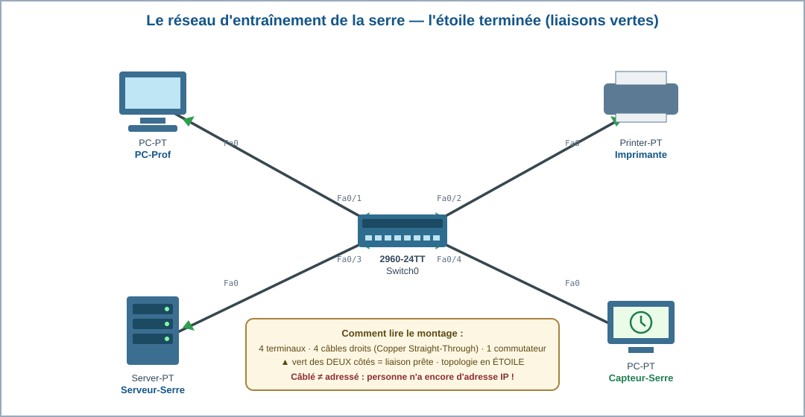
A. Ouvrir Packet Tracer 8.2 (connexion faite par le professeur AVANT la séance) → File → New.
B. Palette (en bas à gauche) : catégorie Network Devices → famille Switches → poser un 2960 au centre du plan de travail.
C. Catégorie End Devices : poser un PC (en haut à gauche), un Server (en bas à gauche), une Printer (en haut à droite) et un second PC qui jouera le capteur (en bas à droite).
D. 🔄 (échange des rôles) Catégorie Connections (l'éclair ⚡) → câble Copper Straight-Through (le trait plein noir) : cliquer l'appareil → choisir FastEthernet0 → cliquer le commutateur → choisir une prise LIBRE (Fa0/1 à Fa0/4).
Répéter pour les 4 appareils.
E. Renommer proprement : clic sur l'appareil → onglet Config → Display Name : PC-Prof, Serveur-Serre, Imprimante, Capteur-Serre.
F. Observer les triangles aux extrémités des câbles : orange d'abord (le commutateur réfléchit ~30 secondes), puis verts des deux côtés = liaison prête.
G. File → Save As → serre_4X_NOM_Prenom.pkt dans le dossier de la classe. On sauvegarde AVANT de jouer avec les pannes !
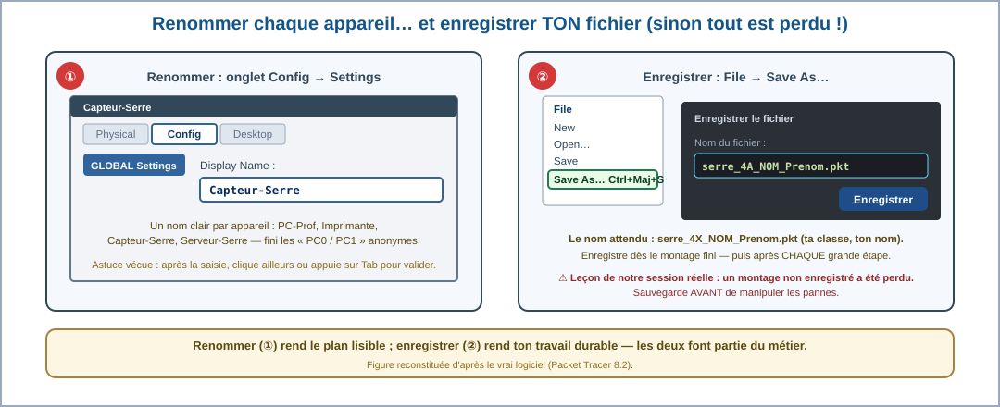
Compte les câbles sur TON écran (ou sur le schéma) : PC-Prof, Serveur, Imprimante, Capteur… chacun a le sien. Toutes les branches partent du même centre : c'est la topologie vue en 5e. L'étape F t'explique l'orange ; l'étape D nomme le câble.
Le montage câblé est comme un lotissement où les routes sont goudronnées mais où aucune maison n'a de numéro : le facteur circule, mais ne peut rien distribuer. Les adresses arrivent à l'activité 3 — c'est exactement pour cela que l'activité 2 s'arrête à « liaisons vertes ».
4 liaisons, une par terminal, toutes vers le 2960 : la topologie en étoile de la 5e. Le câble est le Copper Straight-Through — le câble droit standard entre un terminal et un commutateur.
L'orange des premiers instants est un état normal : le port du commutateur passe par un court état de préparation avant de devenir opérationnel. Un dépanneur qui l'ignore « répare » des pannes qui n'existent pas — il faut attendre avant de conclure. Vert des deux côtés = liaison opérationnelle.
Et non, personne ne peut encore communiquer : une liaison verte transporte, mais sans adresse, aucun message ne sait où aller. Le chantier continue à l'activité 3.
Pourquoi une adresse FIXE ? Ta tablette, chez toi, reçoit une adresse automatique (DHCP) qui peut changer chaque jour — aucune importance, personne ne l'appelle. Mais le capteur de la serre est un objet connecté qu'on doit pouvoir joindre à coup sûr : le serveur vient chercher ses mesures à une adresse écrite dans le plan. Si l'adresse changeait toute seule, le plan serait faux dès le lendemain. Un objet connecté qu'on doit joindre = une adresse fixe (statique).
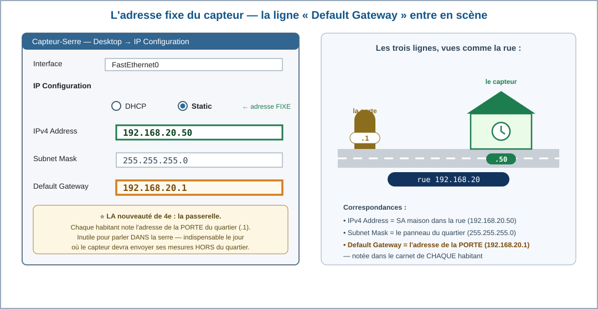
1. Clic sur l'appareil → onglet Desktop → IP Configuration.
2. Cocher Static (et non DHCP — voir ci-dessus pourquoi).
3. IPv4 Address : l'adresse du plan (capteur = 192.168.20.50).
4. Subnet Mask : 255.255.255.0 — la case se propose souvent toute seule ; cette année tu sais ce qu'elle veut dire.
5. Default Gateway : 192.168.20.1 — LA nouveauté.
On y inscrit l'adresse de la passerelle
réservée à l'étape 3 du plan. La serre n'en a pas encore besoin pour parler en interne, mais l'objet connecté
est prêt pour le jour où il devra sortir du quartier.
6. Fermer, passer à l'appareil suivant : PC-Prof = .10, Imprimante = .30, Serveur-Serre = .100 (même masque, même passerelle).
La mission de M. Firmin, c'est le CAPTEUR. La toute première preuve à apporter est donc celle-là : sur PC-Prof → Desktop → Command Prompt, taper ping 192.168.20.50. Si le capteur répond, l'objet connecté est officiellement AJOUTÉ au réseau — c'est le cœur de la compétence 4e_C4.7.
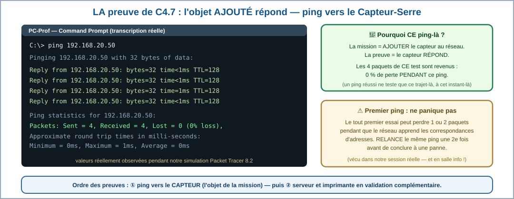
Ensuite seulement, on valide les autres habitants : ping 192.168.20.100 (serveur) puis ping 192.168.20.30 (imprimante). Voici la transcription exacte de notre session — des valeurs réellement observées pendant notre simulation Packet Tracer (le simulateur reproduit la logique du réseau ; il ne mesure pas la latence physique d'un vrai câble) :
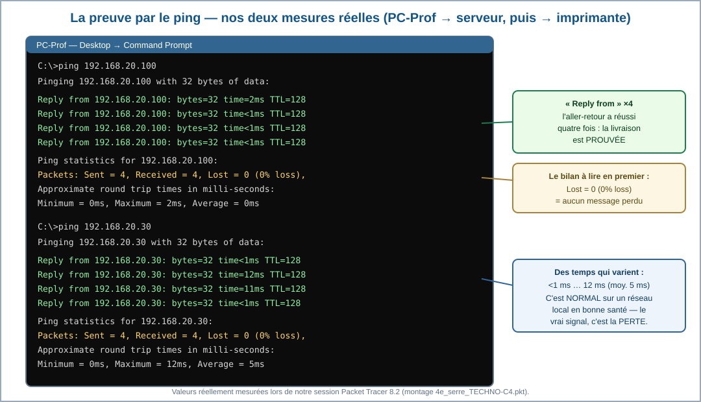
Lis la transcription ligne par ligne : « Reply from » = réponse revenue ; « Sent = 4, Received = 4, Lost = 0 » = le bilan de livraison ; « time<1ms … time=12ms » = la durée de l'aller-retour. La recette d'adressage, étape 5, te dit quoi mettre dans Default Gateway.
Pense au recommandé de La Poste : le ping est un courrier AVEC accusé de réception — s'il revient signé (« Reply »), c'est que l'adresse existe, que la route fonctionne dans les deux sens, et que le destinataire répond. La passerelle, elle, n'est pas le destinataire : c'est la PORTE inscrite dans le carnet d'adresses de chaque habitant, « au cas où il faudrait sortir du quartier ».
Reply from prouve l'aller-retour complet — c'est LA preuve du technicien. Nos deux tests : 4/4 reçus, 0 % de perte, temps entre <1 ms et 12 ms (moyenne 5 ms vers l'imprimante) — des valeurs parfaitement normales pour un réseau local : quelques millisecondes de variation ne sont pas une panne.
Default Gateway = 192.168.20.1 : l'adresse de la passerelle réservée dans le plan. Elle ne sert pas encore à l'intérieur de la serre, mais un objet connecté bien paramétré est prêt à sortir du quartier.
Fixe vs DHCP : on FIGE l'adresse de tout appareil que les autres doivent joindre (serveur, imprimante, capteur) ; on laisse le DHCP distribuer des adresses temporaires aux appareils de passage (téléphones, tablettes).
Pour aller plus loin : dans certains réseaux professionnels, le serveur DHCP peut aussi réserver toujours la même adresse à un équipement (on parle de réservation DHCP). Ici, nous configurons manuellement une adresse Static pour apprendre le principe.
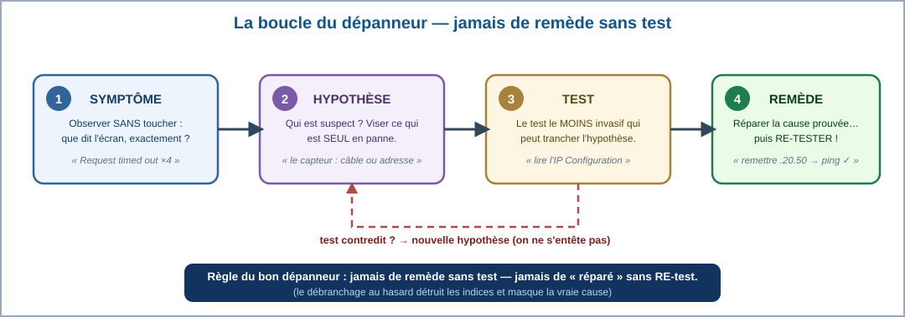
Un mauvais dépanneur débranche tout et rebranche au hasard. Un bon dépanneur observe d'abord, suppose ensuite, teste son idée, et n'applique le remède qu'à la fin — puis re-teste pour prouver la réparation. C'est la même démarche scientifique que ton hypothèse de début de séquence.
Dans notre session réelle, nous avons volontairement déplacé le capteur dans la rue 192.168.21 — une seule unité d'écart. Voici la transcription complète, trois tests à la suite :
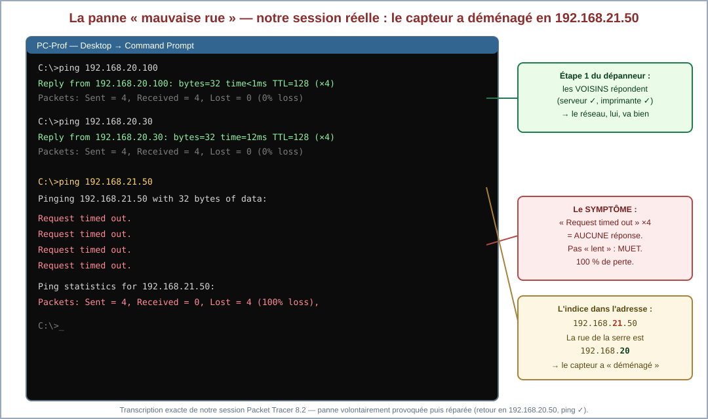
Joue les deux cas dans le simulateur ci-dessous : une livraison normale, puis la consultation « mauvaise rue ». La page enregistre tes expériences — le vérificateur les exige.
Recopie et complète :
« J'observe que ________________.
Je pense que ________________.
Pour vérifier, je ________________.
Le test montre que ________________.
Je corrige ________________.
Je vérifie ensuite avec ________________. »
Suis la boucle dans l'ordre : le SYMPTÔME est écrit noir sur blanc dans la transcription (« Request timed out » ×4) ; l'HYPOTHÈSE la plus raisonnable vise ce qui est SEUL en panne ; le TEST le moins invasif est une simple lecture d'écran ; le REMÈDE remet la valeur du plan… puis on re-teste.
Imagine que ta maison se télétransporte dans la ville voisine en gardant son numéro 50 : le facteur de TA rue ne te trouvera plus jamais, même si la route est parfaite. « Mauvaise rue » = l'appareil s'est déclaré dans un autre réseau : pour la rue 192.168.20, il a tout simplement disparu. C'est pour cela que le câble vert n'y change rien.
Symptôme : « Request timed out » ×4, « Sent = 4, Received = 0, Lost = 4 (100% loss) » — aucun aller-retour. Hypothèse : les autres pings réussissent → le problème est localisé sur le capteur. Test : lire son IP Configuration — zéro risque, information directe. Remède : remettre 192.168.20.50, puis RE-tester : « Reply from » de retour, réparation prouvée.
Le fond de l'affaire : une adresse, c'est rue + maison. En passant en 192.168.21.50, le capteur a changé de QUARTIER : dans la rue 192.168.20, plus personne ne s'appelle .50. Le câble, lui, n'y est pour rien — c'est toute la différence entre une panne de LIAISON et une panne d'ADRESSAGE.
La clinique t'a entraîné·e : maintenant, le vrai métier. Ton professeur te donne UN de ces trois fichiers — chacun contient la serre avec une panne différente, réellement provoquée et vérifiée dans notre session Packet Tracer (le symptôme au ping a été prouvé pour chacune). Tu ne sais pas laquelle tu reçois.
📦 4e_serre_PANNE_A.pkt · 📦 4e_serre_PANNE_B.pkt · 📦 4e_serre_PANNE_C.pkt
Déroule la boucle du dépanneur et remplis ta fiche d'intervention — c'est elle qui prouve la compétence, pas la chance :
Commence TOUJOURS par un ping vers chaque habitant depuis PC-Prof : qui répond, qui ne répond pas ? Puis regarde les triangles : verts partout ? Alors la famille « adressage » est suspecte — ouvre les IP Configuration et relis ligne à ligne (adresse, MASQUE, rue). Un triangle rouge ? Famille « liaison » — cherche le port coupé.
Les trois pannes possibles appartiennent aux familles que tu connais : une histoire de RUE, une histoire de PORT… et une troisième plus sournoise où l'adresse a l'air parfaite — pense à relire TOUTES les lignes de la fenêtre, pas seulement l'adresse : le masque fait partie de l'adresse.
🎓 Note pour l'enseignant : ces fichiers servent aussi d'évaluation pratique courte — en dix minutes, la fiche d'intervention faisant trace — voir la synthèse professeur. Aucun corrigé n'est publié ici.
Deuxième consultation à la clinique : cette fois, l'adresse de l'imprimante est parfaite… et pourtant plus rien ne passe. Regarde le montage :
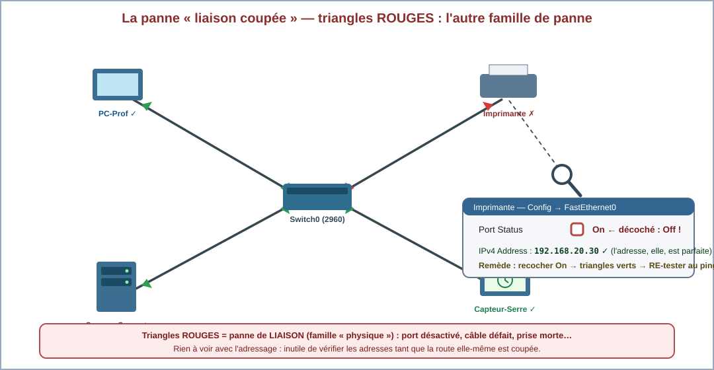
M. Firmin te FOURNIT le fichier du réseau réparé : 📦 télécharger 4e_serre_TECHNO-C4.pkt (construit et vérifié dans notre session réelle). Ta mission n'est PAS de le reconstruire : c'est d'y ajouter le test qui manque pour valider son comportement.
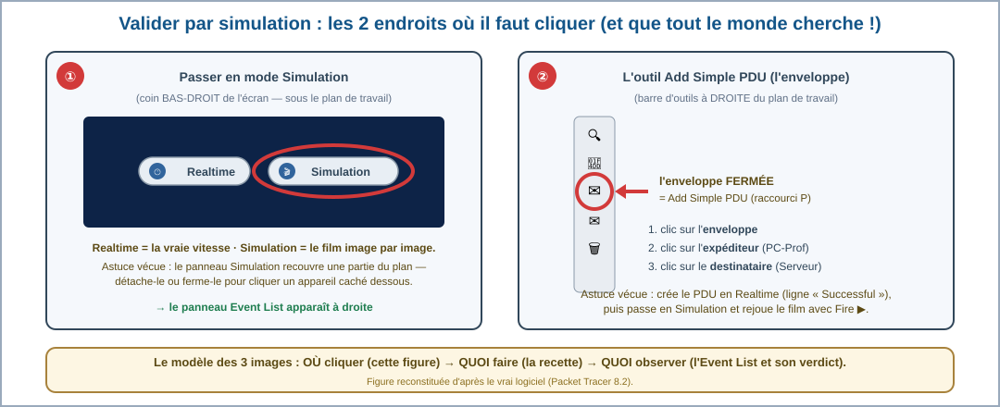
1. Ouvrir le fichier fourni dans Packet Tracer.
2. En bas à droite, passer de Realtime à Simulation — le temps est maintenant sous TON contrôle.
3. Prendre l'outil enveloppe fermée (Add Simple PDU) dans la barre d'outils de droite.
4. Cliquer PC-Prof (expéditeur) puis Serveur-Serre (destinataire) : le scénario de test est ajouté au fichier.
5. Bouton Play : l'enveloppe s'anime — note chaque arrêt de son trajet.
6. Le verdict s'écrit dans la liste des scénarios : Successful = comportement validé. Sauvegarder : ton test fait maintenant partie du fichier.
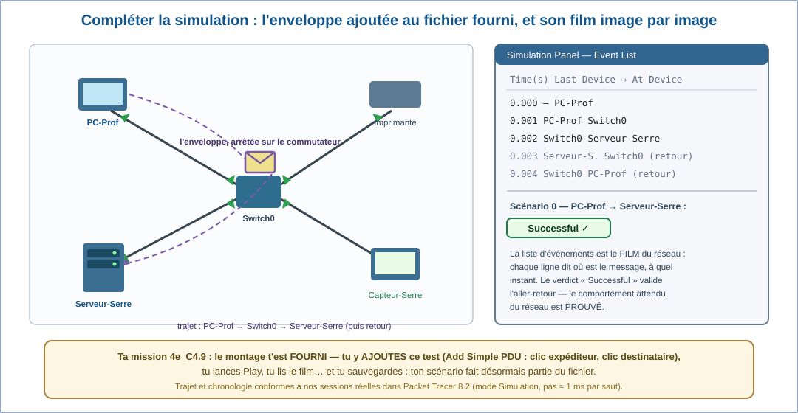
Compare les deux pannes : act. 4 = adresse fausse, câble vert ; act. 5 = adresse bonne, triangles ROUGES. Pour la simulation, suis la recette pas à pas : l'enveloppe se pose sur l'expéditeur puis sur le destinataire, et le film se lit dans la liste d'événements.
Deux familles de pannes = deux symptômes différents : l'ADRESSAGE casse la livraison (timeout, liens verts), la LIAISON casse la route (triangles rouges). Le mode Simulation est le ralenti de l'arbitre : il rejoue l'action image par image pour qu'on VOIE le trajet — et le verdict « Successful » est l'accusé de réception officiel.
Panne n°2 : triangles rouges sur la seule liaison de l'imprimante = panne de LIAISON (le port était sur Off). Remède : Port Status → On, triangles verts, re-test au ping. Adresse intacte du début à la fin : rien à voir avec la « mauvaise rue ».
Validation : l'enveloppe ajoutée au fichier fourni passe TOUJOURS par le commutateur (l'étoile n'a qu'un centre), et le verdict « Successful » signe l'aller-retour simulé. On valide en simulation parce qu'on peut y provoquer, réparer et rejouer des pannes À VOLONTÉ, sans toucher au réseau pédagogique — c'est le mot même du programme : « simulation ou réseau local déconnecté ».
La recette t'a guidé·e une fois — maintenant, la consigne est celle d'un vrai chef d'atelier, sans procédure :
« Vérifie, sans tutoriel, que Capteur-Serre peut communiquer avec Serveur-Serre. Fournis une preuve. »
À TOI de choisir ton test : un ping depuis le capteur ? une enveloppe Add Simple PDU capteur → serveur ? autre chose ? Tous les chemins honnêtes mènent à la preuve.
Tu connais DEUX preuves : le ping (Command Prompt du capteur — oui, le capteur a aussi son terminal !) et l'enveloppe du mode Simulation. N'importe laquelle suffit, du moment que tu peux MONTRER le résultat (« Reply from » ou « Successful »).
Toutes ces notions ont été construites dans les activités 1 à 5.
Avant de brancher, on conçoit : une rue commune (192.168.20), un numéro unique par appareil, le .1 réservé à la passerelle (la porte vers les autres réseaux), et le masque 255.255.255.0 qui sépare la rue du numéro de maison.
Un objet connecté qu'on doit joindre reçoit une adresse fixe (Static) : IPv4 + masque + passerelle. On prouve le paramétrage au ping : « Reply from » = aller-retour réussi, « 0% loss » = livraison parfaite (nos mesures réelles : 0 à 12 ms).
La boucle du dépanneur : symptôme → hypothèse → test → remède → re-test. Deux familles de pannes : adressage (« Request timed out », liens verts — ex. la mauvaise rue 192.168.21.50) et liaison (triangles rouges — ex. le port sur Off). Le mode Simulation valide le comportement : enveloppe, trajet par le commutateur, verdict « Successful ».
adresse fixe = static addresspasserelle = gatewaymasque = subnet maskdépanner = to troubleshootpanne = failuredélai dépassé = timed outsimulation = simulation
4e_C4.7 — paramétrer une adresse IP fixe pour un objet connecté :
4e_C4.8 — résoudre des problèmes de communication :
4e_C4.9 — compléter une simulation pour valider un comportement :
30 questions — dont 7 illustrées par les schémas du vrai logiciel — pour vérifier tout ce que tu sais sur l'adresse fixe, le dépannage et la simulation.
🚀 Ouvrir le QCM d'entraînement🏠 Défi maison : avec l'accord d'un adulte, retrouver l'adresse de la passerelle de TA box (Paramètres → WiFi → détails) : finit-elle en .1, comme dans notre plan ?
🩺 Défi clinique XXL : dans TON fichier .pkt, inventer une TROISIÈME panne (au choix : doublon d'adresse, mauvais masque, câble débranché), la faire diagnostiquer au binôme voisin avec la boucle du dépanneur — chronomètre en main.
🌡 Défi jardin : relier cet atelier à la séquence « jardin connecté » : quelle adresse fixe donnerais-tu à la carte micro:bit du jardin (rue 192.168.10) ? Justifier en deux phrases dans le respect du plan.